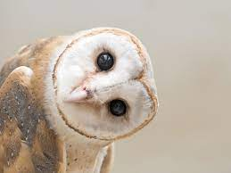

AVES

La lechuza en un ave rapaz carnívora y nocturna perteneciente al orden Strigiformes, de donde también el búho típico forma parte, solo que a diferencia
de éste, no contiene unas plumas en su cabeza que le dan forma de orejas. Con respecto al tamaño, las hembras suelen ser más grandes que los machos.
Las lechuzas viven en gran parte del planeta, excepto en el norte de Norteamérica, en una vasta zona de Asia y en el desierto del Sahara, en África. Se encuentran en casi cualquier hábitat terrestre, pero a elevaciones de hasta 4,000 metros.
Tanto lechuzas y sus parientes búhos, son frecuentemente avistados en grandes jardines, zonas agrícolas, pueblos cercanos a campos y cementerios, razón por la que no tienen muy buena reputación.
CARACTERISTICAS
- Están provistas de un suave y bello plumaje.
- Sus patas son fuertes y poseen garras poderosas.
- Existen lechuzas tan pequeñas como un gorrión
- Uno de los rasgos más sobresalientes de las lechuzas es que están provistas de un aro de plumas, más duras que el resto, que rodean su cara en forma de corazón
- Sus alas son largas y le permiten tener un vuelo excelente y muy silencioso para no ser advertidas por su presa.